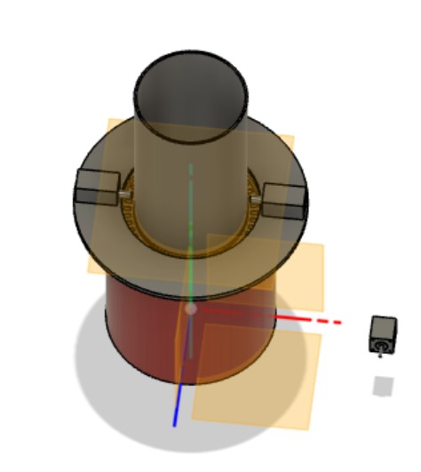
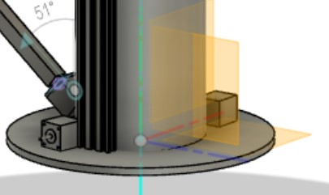
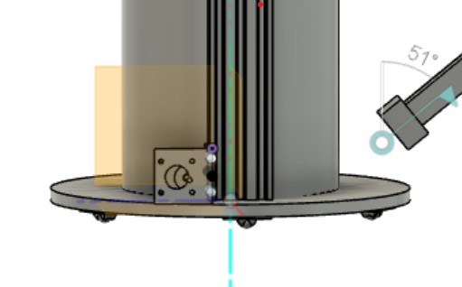
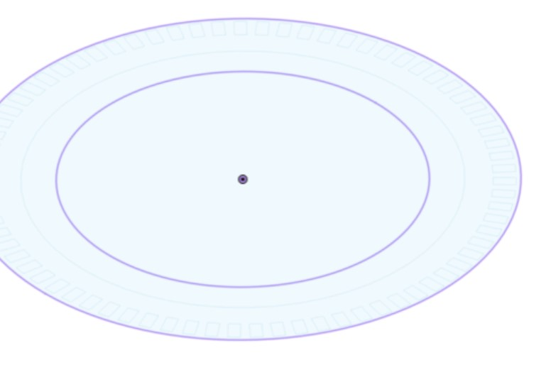

## Week 12
### Monday-Nov 28
More drum CADing today with Anna and Catherine's CADed stepper motors. I was focusing a lot today on the design of the upper platform and how the stepper motors would interact with the geometry of the linear actuator component and 80-20 extrusions on the side of the light pipe. These are pictured below.


### Wednesday-Nov 30
Today was a pretty eventful day. I continued my work on CADing with the light pipe and drum files, mainly focusing on the light pipe file today. Between Monday and today, I measured out the approximate dimensions for the brackets that we plan on using for the stepper motors on the platform and implementing those dimensions into the Fusion file. This is pictured below. I also realized that one track was likely enough for our design and that two tracks would have constrained our design by quite a bit, but I was still having trouble deciding on whether or not to switch the positions of the gear track and wheel track. For now, Nathan thought it would be a good idea to laser cut the bottom drum platform, and with his and Joel's help, I ended up with a cardboard laser cut platform that thankfully fit the 8 and 12 inch diameter constraints that we had. This laser cut piece ended up having the gear track along the outside, but I suspect this will change next week. Below are pictures and a video of the work done.


<video width="500px" height="500px"
controls="controls"/>
<source src="gear.mp4"
type="video/mp4">
</video>